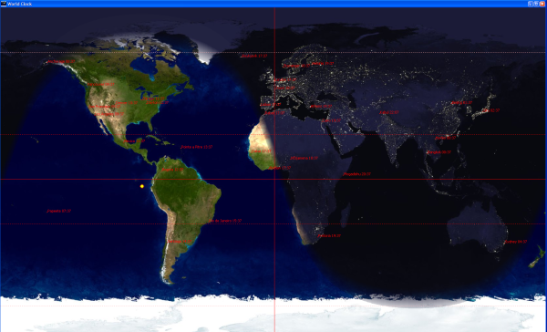

(requires Java 6.0+) or for Java 5
(requires Java 6.0+) or for Java 5A simple World Clock accessible from the system tray. Shows the time in the cities arround the world. (Cities that are loaded from a configuration file)
|  |
(requires Java 6.0+) or for Java 5To configure edit the config.xml file, right click on the tray icon, then in the Options dialog point to the edited file.
For the downloaded versions one can use the -show flag on the command line to show the main window when the application starts
A World clock screen saver based on the Java SaverBean Screensaver SDK. In addition to the clocks, the screen saver also allows for UFOs.
Download the appropriate file:
To configure edit the config.xml file, then go to the screen saver configuration options and set the planes path to the config file, also check random to have the planes showns randomly.
The configuration file is a simple XML file:
<config>
<planes>
<plane name="ufo" horizontal="gauche" vertical="haut" image="pathto/ufo.png"/>
</planes>
<cities>
<city name="Tours" lat="47.27" long="0.43" timezone="Europe/Paris"/>
</cities>
</config>
Planes:
See the config.xml for some samples.
A World day and night JPanel to be used in Swing applications.
Download this.
An early version of a World Clock desklet.
Download this.